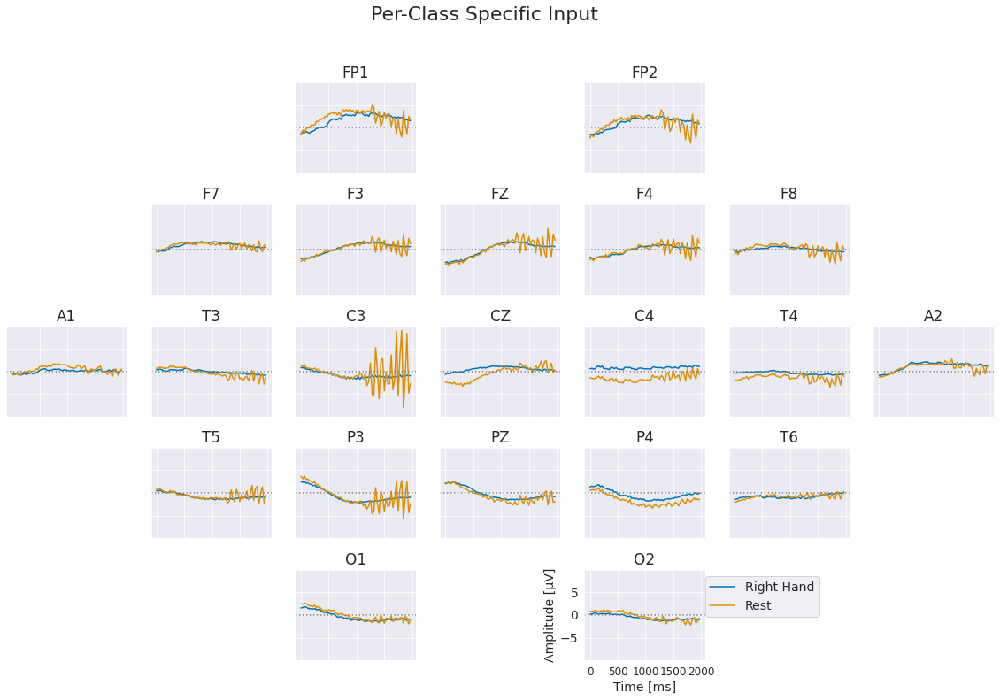
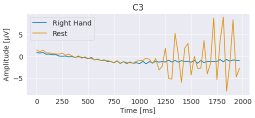

Invertible Networks
Invertible Networks#
Invertible networks are networks that are invertible by design, i.e., any network output can be bijectively mapped back to a corresponding input [refs]. The ability to invert any output back to the input enables different interpretability methods and furthermore allows training invertible networks as generative models via maximum likelhood.
[todo explain]

Fig. 38 Right hand vs resting state class prototypes learned by an invertible network on the BCIC IV 2a dataset. Note the increased alpha oscillation for resting state, especially on the left side.#

Fig. 39 Right hand vs resting state class prototypes learned by an invertible network on the BCIC IV 2a dataset, showing the C3 electrode. Note the increased alpha oscillation.#
Class prototypes are one directly obtainable visualization of the trained invertible network. Here, the invertible network was trained as a class-conditional generative model via maximum likelihood with an extra classification loss [refs etc.]. To obtain the class protypes we first found the maxima of each class distribution, i.e., of the learned class-conditional distribution \(p_{\theta}(x|y_c)\). From that starting point, the synthetic prototypes were further optimized to minimize \(L_{proto}(x) = -w_{prob}\log_{}\left(p_{\theta}\left(x\mid y_{c}\right)\right)\,-w_{class}\,\log_{}\left(p_{\theta}\left(y_{c}\mid x\right)\right)\).
Prototypes for right hand vs resting state show a plausible discriminative pattern with increasing alpha oscillation of resting state compared to right hand, see Fig. 38. Note that due to the discriminative training and the discriminative term in the optimization, these visualizations may show discriminative patterns that do not directly correspond to how actual signals for these classes look like. For example, in the actual data there may a decreasing right hand oscillation and a stable oscillation for resting state. See also the discussion in Interpretation and limitations.
Todo:
Neural architecture search
Simplebits